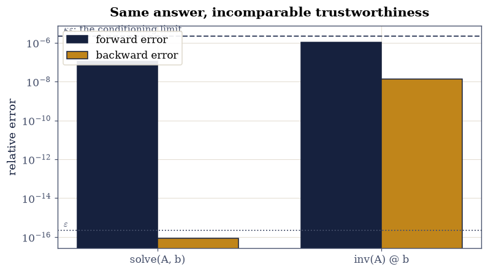
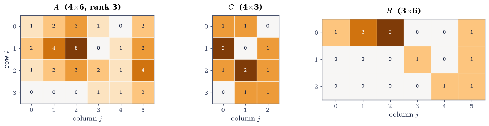
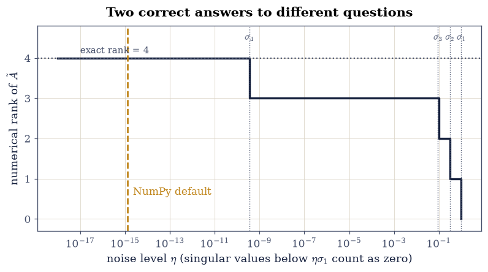

1.3 Inverses, Rank, and A = CR#
Notebook overview#
Two ideas here, and they pull in opposite directions.
The first is that \(A^{-1}\), the object every hand calculation reaches for, is
something a numerical library goes out of its way to avoid. It exists, it is
computable, and computing it costs about three times a solve and returns an
answer that is catastrophically less trustworthy. We measure that: on a
system with \(\kappa = 10^{10}\), solve(A, b) and inv(A) @ b differ by only a
factor of twelve in the accuracy of the answer, but by a factor of \(10^{8}\) in
backward error — the quantity §0.2
introduced as the honest measure of whether an algorithm did its job. The
solve produces the exact answer to a problem a rounding error away from yours.
The inverse produces an answer to no nearby problem at all.
The second idea is rank, and it is where this course’s exact-versus-float spine bites hardest. In exact arithmetic rank is a theorem: the number of independent columns, computed by elimination over the rationals, with no ambiguity whatsoever. In floating point it is a threshold on singular values, and different defensible thresholds give different answers for the same matrix. The Prologue planted that question and §0.2 supplied the machinery; here we confront it directly, with SymPy’s exact answer printed beside NumPy’s, and see precisely where they part company.
In between sits the factorization that makes rank concrete. \(A = CR\) takes the independent columns as \(C\) and the recipe for rebuilding the rest as \(R\), and it proves in one line something that is otherwise a real theorem: row rank equals column rank, for every matrix, always.
How to read a check. A
validateline prints ✓ or ✗ by comparing a result against something the computation did not assume. A ✗ flags a mismatch to investigate, never a verdict on its own.
Scope. The \(A = CR\) framing and its proof of the rank theorem are Strang’s [Str23], Chapter 3. For why the inverse is avoided, and the backward-error argument in full, Higham [Hig02] Chapter 14, whose title — “Matrix Inversion” — opens with the observation that the operation is far less often needed than supposed.
Theory in brief#
The inverse, and why it is a detour#
For square \(A\) the inverse satisfies \(AA^{-1} = A^{-1}A = I\), and its columns are the solutions of \(n\) linear systems:
So computing \(A^{-1}\) is solving \(n\) systems — one factorization plus \(n\) pairs of triangular sweeps by §1.2, which is \(\tfrac23 n^3 + 2n^3 = \tfrac83 n^3\) operations, about four times the cost of the single solve you probably wanted.
Cost is the smaller objection. The real one is stability. Solving directly gives a computed \(\hat{\mathbf{x}}\) that is the exact solution of \((A + \delta A)\hat{\mathbf{x}} = \mathbf{b}\) with \(\|\delta A\|\) of order \(\varepsilon\|A\|\): a backward stable result. Forming \(A^{-1}\) and multiplying does not have that property, and the multiplication introduces errors that no nearby problem explains. Both answers may have similar forward error, since both are limited by \(\kappa\varepsilon\), but only one of them is the right answer to a question anybody asked.
The rule, which this course follows everywhere: to solve \(A\mathbf{x} = \mathbf{b}\), factor and substitute; never form \(A^{-1}\). The inverse is a theoretical object, and the notation \(A^{-1}\mathbf{b}\) is an instruction to solve, not a recipe to multiply.
Rank, and the factorization that explains it#
The column rank of \(A\) is the dimension of its column space; the row rank is the dimension of its row space. That these are always equal is not obvious, and \(A = CR\) makes it a one-liner.
Go through the columns left to right, keeping each one that is not a combination of those already kept. Assemble the kept columns as \(C\) (with \(r\) of them) and the coefficients rebuilding every column of \(A\) as \(R\):
By construction \(r\) is the column rank. But \(R\) has only \(r\) rows, and every row of \(A\) is a combination of them, so the row rank is at most \(r\). Applying the same argument to \(A^{\top}\) gives the reverse inequality, and therefore
Concretely, \(R\) is the nonzero part of the reduced row-echelon form and \(C\) is the corresponding pivot columns of \(A\). Both are computed by elimination, and over the rationals both are exact.
Rank in floating point#
The definition “number of independent columns” is useless numerically, because independence is a yes/no question about exact equality and floating-point quantities are never exactly anything. What replaces it is the singular value threshold of §0.2:
a decision parameterised by the noise level \(\eta\) you believe your entries
carry. np.linalg.matrix_rank takes \(\eta = \max(m,n)\varepsilon\) by default,
which answers a narrow question — treat these floats as exact and ask what the
SVD algorithm alone could have introduced. For a matrix whose entries came from
measurement, arithmetic, or storage, that is the wrong question, and Exercise 7
shows how differently it can answer.
Setup#
Data and instruments only: the worked matrices, the timing meter of §0.1, and a backward-error meter. Nothing here is any exercise’s lesson.
The Setup below holds this notebook’s data and instruments — nothing you are asked to build. It is collapsed so the building stays yours; expand it whenever you want the details.
Exercise 1: The inverse, one column at a time#
Eq. 62 says the inverse is \(n\) solutions side by side: column \(j\) of \(A^{-1}\) solves \(A\mathbf{x} = \mathbf{e}_j\). Building it that way makes the cost visible and removes any sense that the inverse is a primitive operation. It is a loop over solves.
The efficient version reuses one factorization for all \(n\) right-hand sides, exactly as §1.2 Exercise 6 established, so the cost is \(\tfrac23 n^3\) for the factorization plus \(n \cdot 2n^2 = 2n^3\) for the sweeps:
four times a single solve. That is the cheap way to do it by hand; the
expensive way would be \(n\) independent solves — and the library does better
than both, reorganizing the sweeps into triangular-triangular products for
\(2n^3\) total (three times an LU), which is the figure
ecp.linalg.flops("inverse") records.
Part a) For the explicit matrix
build \(A_3^{-1}\) column by column from Eq. 62 using
scipy.linalg.lu_factor once and lu_solve on each \(\mathbf{e}_j\), and
compare against np.linalg.inv to \(10^{-12}\).
Part b) Confirm both defining identities \(AA^{-1} = I\) and \(A^{-1}A = I\) to \(10^{-12}\) — they are separate claims, and a one-sided inverse of a square matrix is automatically two-sided only because the matrix is square.
Part c) Put the cost estimate Eq. 66 beside the
clock: time np.linalg.inv against np.linalg.solve at \(n = 800\) and
report the ratio next to both predictions — the measured value is
testimony, never gated. (It will not be exactly 4: the inverse is
level-3-friendly and the single solve is not, which is
§1.1 again.)
A3^-1 built column by column:
[[ 0. 0. 1.]
[-2. 1. 3.]
[ 3. -1. -5.]]
agrees with np.linalg.inv to 0.000e+00
max |A A^-1 - I| = 1.776e-15
max |A^-1 A - I| = 2.220e-16
n = 800: solve 11.5 ms inv 38.8 ms ratio 3.39 (Eq. 5's column route predicts 4, the library's 2n^3 route 3)
Validation 1#
The column-by-column construction is checked against an independent implementation, and both defining identities are checked separately. The cost ratio is gated to a wide band, since it is a property of this machine’s BLAS rather than of the arithmetic.
✓ the inverse built from Eq. 1 matches np.linalg.inv [max|Δ| = 0 (rtol=0, atol=1e-12)]
✓ A A^-1 = I [max|Δ| = 1.77636e-15 (rtol=0, atol=1e-12)]
✓ and A^-1 A = I, which is a separate claim [max|Δ| = 2.22045e-16 (rtol=0, atol=1e-12)]
✓ forming the inverse costs 3x an LU by the library's FLOP model [got [3.] vs expected [3.] (rtol=0, atol=1e-12)]
✓ and the measured ratio is reported, never gated [measured 3.39x at n = 800; a wall-clock ratio is a property of the machine, not of the algorithms. The band is wide because the inverse is level-3-friendly and a single solve is not, so the ratio depends on how many cores the machine brings to each]
True
Exercise 2: Never form the inverse#
This is the exercise the notebook exists for, and the result is sharper than the usual advice suggests.
Take a \(200\times200\) matrix with condition number exactly \(10^{10}\), built by
ecp.linalg.random_with_condition so the conditioning is chosen rather than
stumbled upon, and a right-hand side \(\mathbf{b} = A\mathbf{x}_{\text{true}}\)
with a known answer. Solve it twice: once with np.linalg.solve, once by
forming np.linalg.inv(A) @ b. Then measure two different errors.
The forward error \(\|\hat{\mathbf{x}} - \mathbf{x}\|/\|\mathbf{x}\|\) says how wrong the answer is. Both routes will be poor, around \(\kappa\varepsilon \approx 10^{-6}\), and that is nobody’s fault: Eq. 21 says the problem itself cannot do better.
The backward error \(\|A\hat{\mathbf{x}} - \mathbf{b}\| / (\|A\|
\|\hat{\mathbf{x}}\|)\) says something quite different — whether the computed
answer is the exact solution of a nearby problem. This is where the two
routes separate, and not by a little. solve returns a fraction of a single
\(\varepsilon\); inv(A) @ b returns something like \(10^{7}\varepsilon\), eight
orders of magnitude worse. Its answer is not the exact solution of any problem
close to the one posed.
That distinction is the whole reason to prefer one over the other. If you only ever looked at forward error you would conclude the two are comparable and the inverse merely slower. They are not comparable, and the difference shows up the moment the result is used for anything downstream.
Part a) Build \(A\) = la.random_with_condition(200, 200, 1e10, rng) and
\(\mathbf{b} = A\mathbf{x}_{\text{true}}\) for a random \(\mathbf{x}_{\text{true}}\),
and confirm \(\kappa(A) = 10^{10}\) to a relative \(10^{-4}\).
Part b) Solve both ways and report the forward error of each, together with the bound \(\kappa\varepsilon\) that Eq. 21 permits.
Part c) Report the backward error of each with the backward_error helper,
in units of \(\varepsilon\), and confirm that solve stays within a small
multiple of \(\varepsilon\) while inv exceeds it by more than four orders of
magnitude. Plot both errors for the two routes as a grouped bar chart on a log
axis.
kappa(A) = 1.0000e+10 kappa * eps = 2.220e-06
route forward error backward error in units of eps
solve(A, b) 1.101e-07 8.719e-17 0.39
inv(A) @ b 1.041e-06 1.338e-08 60265790.86
forward ratio inv/solve : 9.5x
backward ratio inv/solve : 1.535e+08x <- this is the number that matters

Fig. 26 Forward and backward error for solving the same \(200\times200\) system with \(\kappa = 10^{10}\) two ways, on a logarithmic axis. The forward errors (ink) are comparable and both sit near the \(\kappa\varepsilon\) limit that the conditioning imposes on any method, marked by the dashed rule. The backward errors (amber) are not comparable at all: \texttt{solve} returns a fraction of one \(\varepsilon\), so its answer is the exact solution of a problem a rounding error away, while \texttt{inv(A) @ b} exceeds that by orders of magnitude and solves no nearby problem.#
Validation 2#
The forward errors are checked to be comparable, which is the part that misleads, and the backward errors to be incomparable, which is the part that decides. The conditioning bound is checked as a bound, one-sided, exactly as §0.2 established such things must be.
✓ the constructed matrix has kappa = 1e10 as requested [got 1e+10 vs expected 1e+10 (rtol=0.0001, atol=0)]
✓ both forward errors respect the conditioning bound of section 0.2 [solve 1.10e-07, inv 1.04e-06, limit 2.22e-06]
✓ the FORWARD errors are comparable, which is what misleads [only 9.5x apart]
✓ solve is backward stable: its answer exactly solves a nearby problem [0.39 eps]
✓ inv(A) @ b is NOT: its backward error is >10^4 times larger [1.53e+08x — it solves no nearby problem]
True
Exercise 3: Rank three ways#
Rank has three operational definitions, and it is worth computing all three on the same matrix and watching them agree, because Exercise 7 is about the case where they do not.
Exactly, by elimination over the rationals. sympy.Matrix(A).rank() runs
elimination in exact arithmetic and counts pivots. There is no tolerance and no
ambiguity; the answer is a theorem about the matrix you typed.
Numerically, from the singular values. np.linalg.matrix_rank counts
\(\sigma_i\) above a threshold, Eq. 65. This is the standard
numerical definition and the one every library uses, because the singular
values are the stable way to measure how close a matrix is to a lower-rank
one — a claim §4.2 makes exact.
From the pivots of the factorization. §1.2 Exercise 8 read the rank off \(\operatorname{diag}(U)\) by counting non-negligible pivots. This is cheap, since the factorization is usually computed anyway, but it is the least reliable of the three: a matrix can be numerically rank-deficient with no small pivot, and a pivot can be small for reasons unrelated to rank.
Test on the \(4\times6\) matrix of the setup cell,
which was built so that \(\mathbf{a}_2 = 2\mathbf{a}_1\), \(\mathbf{a}_3 = 3\mathbf{a}_1\), and \(\mathbf{a}_6 = \mathbf{a}_1 + \mathbf{a}_4 + \mathbf{a}_5\). Three of its six columns are redundant, so the rank is 3.
Part a) Confirm the three stated dependencies of Eq. 68 hold exactly, by forming each difference and checking it is the zero vector with no tolerance at all (the entries are small integers).
Part b) Compute the rank all three ways: sympy.Matrix(...).rank(),
np.linalg.matrix_rank, and by counting singular values above
\(\max(m,n)\varepsilon\sigma_1\) by hand from np.linalg.svd. Confirm all three
give 3.
Part c) Report the singular values and confirm the gap: \(\sigma_3\) is of order 1 while \(\sigma_4\) is of order \(\varepsilon\), so the threshold in Eq. 65 has fifteen orders of magnitude of room and the answer does not depend on where in that range it is placed. That comfortable situation is exactly what Exercise 7 destroys.
a2 - 2*a1 = [0. 0. 0. 0.] exactly zero: True
a3 - 3*a1 = [0. 0. 0. 0.] exactly zero: True
a6 - (a1 + a4 + a5) = [0. 0. 0. 0.] exactly zero: True
rank, exact (SymPy over the rationals) : 3
rank, np.linalg.matrix_rank : 3
rank, counting sigma > 1.425e-14 : 3
singular values: [10.6941 3.2691 0.9746 0. ]
sigma_3 = 0.974637 sigma_4 = 1.158e-15
ratio sigma_4/sigma_1 = 1.083e-16
any threshold between 1.1e-16 and 9.1e-02 gives rank 3
Validation 3#
The dependencies are checked with no tolerance, since the matrix holds small integers. The three rank computations are required to agree, and — the check that makes the agreement meaningful — the singular value gap is required to span at least ten orders of magnitude, so the agreement is not a coincidence of threshold placement.
✓ a2 - 2*a1 vanishes exactly [max|Δ| = 0 (rtol=0, atol=0)]
✓ a3 - 3*a1 vanishes exactly [max|Δ| = 0 (rtol=0, atol=0)]
✓ a6 - (a1 + a4 + a5) vanishes exactly [max|Δ| = 0 (rtol=0, atol=0)]
✓ all three definitions of rank give 3 [exact elimination, matrix_rank, and a hand threshold on the singular values]
✓ and the singular value gap spans >12 orders, so the threshold is not delicate [sigma_4/sigma_1 = 1.1e-16, sigma_3/sigma_1 = 9.1e-02]
True
Exercise 4: \(A = CR\), and row rank for free#
Now the factorization, and the theorem it hands over without work.
The reduced row-echelon form of Eq. 68 has pivots in columns 1, 4 and 5, so those are the independent ones and \(C = [\,\mathbf{a}_1\ \mathbf{a}_4\ \mathbf{a}_5\,]\). The nonzero rows of the echelon form are \(R\), and by Eq. 63 their product is \(A\). For this matrix every entry of \(R\) is an integer, so the reconstruction is exact — no tolerance is needed anywhere in this exercise.
Read \(R\) column by column and it is the list of dependencies: its column 2 is \((2,0,0)^{\top}\), saying \(\mathbf{a}_2 = 2\mathbf{a}_1\); its column 6 is \((1,1,1)^{\top}\), saying \(\mathbf{a}_6 = \mathbf{a}_1 + \mathbf{a}_4 + \mathbf{a}_5\). The pivot columns of \(R\) form the identity \(I_3\), which is what “reduced” means.
And now the theorem. \(R\) has three rows. Every row of \(A\) is a combination of them, because \(A = CR\) read row-wise says row \(i\) of \(A\) is \(\sum_k c_{ik}(\text{row } k \text{ of } R)\). So the row space has dimension at most 3, and since the column rank is exactly 3 we get row rank \(\le\) column rank. Running the argument on \(A^{\top}\) gives the reverse, and Eq. 64 follows. A genuine theorem, from a factorization that cost one elimination.
Part a) Compute the exact rref of Eq. 68 with
sympy.Matrix(...).rref(), extract the pivot columns as \(C\) and the nonzero
rows as \(R\), and verify \(A = CR\) with no tolerance.
Part b) Confirm \(R\)’s pivot columns form \(I_3\) exactly, and read the three dependencies off its non-pivot columns, checking each against Exercise 3.
Part c) Verify Eq. 64 directly by computing the rank of \(A^{\top}\) exactly and confirming it equals 3. Draw \(A\), \(C\) and \(R\) as heatmaps.
pivot columns: (0, 3, 4) so r = 3
C = A[:, [0, 3, 4]] shape (4, 3)
R =
[[1. 2. 3. 0. 0. 1.]
[0. 0. 0. 1. 0. 1.]
[0. 0. 0. 0. 1. 1.]]
A = CR exactly: True max|A - CR| = 0.0e+00
R's pivot columns form I_3: True
reading the dependencies out of R's non-pivot columns:
a2 = 2*a1
a3 = 3*a1
a6 = 1*a1 + 1*a4 + 1*a5
row rank (exact rank of A^T) : 3
column rank : 3
equal, as Eq. 3 requires : True

Fig. 27 The factorization \(A = CR\) of the \(4\times6\) matrix of Eq. 7 on a diverging colour scale centred at zero: \(C\) (\(4\times3\)) holds the independent columns \(\mathbf{a}_1, \mathbf{a}_4, \mathbf{a}_5\), and \(R\) (\(3\times6\)) holds the coefficients rebuilding all six, with the identity \(I_3\) sitting in the pivot columns \(1, 4, 5\) and each remaining column stating one dependency. Because \(R\) has only three rows and every row of \(A\) is a combination of them, the row rank cannot exceed the column rank, which is the whole proof of Eq. 3.#
Validation 4#
Every check here is exact, because the factorization was computed over the rationals and the entries are integers. The theorem Eq. 64 is verified by computing the row rank independently — from \(A^{\top}\), not from \(R\) — so the agreement is evidence rather than a restatement.
✓ A = CR reproduces the matrix exactly [max|Δ| = 0 (rtol=0, atol=0)]
✓ R carries the identity in the pivot columns [max|Δ| = 0 (rtol=0, atol=0)]
✓ row rank = column rank = 3 (Eq. 3), the two computed independently [column rank from the pivots of A, row rank from the exact rank of A^T]
✓ both factors have full rank r, as the construction requires [C's columns are independent by selection; R's rows are the echelon rows]
✓ R's last column states a6 = a1 + a4 + a5, matching Exercise 3 [max|Δ| = 0 (rtol=0, atol=0)]
True
Exercise 5: What rank does under products and sums#
Rank obeys a small set of inequalities that get used constantly, and each one has a one-line reason once Eq. 41 and Eq. 63 are in hand.
Products cannot gain rank. Since \(AB\)’s columns are combinations of \(A\)’s columns, and its rows are combinations of \(B\)’s rows,
A corollary worth stating separately: the rank of a product is at most the inner dimension, so an \(m\times k\) times a \(k\times n\) product has rank at most \(k\) however large \(m\) and \(n\) are. That is the fact §4.2 exploits to compress matrices, and the fact §8.6 exploits to fine-tune neural networks with a fraction of the parameters.
Sums cannot gain more than they bring.
since every column of \(A+B\) lies in the span of the two column spaces together. In particular a rank-one update changes the rank by at most 1 in either direction, which is why the update formula of Exercise 6 exists.
Multiplying by an invertible matrix changes nothing. If \(P\) and \(Q\) are invertible then \(\operatorname{rank}(PAQ) = \operatorname{rank}(A)\), because multiplying by an invertible matrix is a change of basis and rank is a property of the map rather than of its representation — an idea §1.6 takes up properly.
Part a) Verify Eq. 69 over 300 random trials with shapes
drawn so the inner dimension is sometimes the binding constraint: \(A\) of shape
\((m, k)\) and \(B\) of shape \((k, n)\) with \(m, n \in [4, 9]\) and \(k \in [1, 5]\)
from rng.integers. Record how often the bound is attained with equality.
Part b) Verify Eq. 70 over 300 random trials with \(A\) and \(B\) both \(6\times6\) of prescribed ranks 2 and 3, built as products of random \(6\times r\) and \(r\times6\) factors.
Part c) Verify invariance under invertible multiplication: for the \(4\times6\) matrix \(A\) of Eq. 68 (rank 3) and random invertible \(P\) (\(4\times4\)) and \(Q\) (\(6\times6\)), confirm \(\operatorname{rank}(PAQ) = 3\) over 100 trials. Then show a rank-one update changes the rank by at most one.
rank(AB) <= min(rank A, rank B): 300/300 hold, 300/300 attained with equality
rank(A + B) <= rank A + rank B : 300/300 hold, 300/300 attained with equality
rank(P A Q) = rank(A) = 3 : 100/100 (P, Q invertible)
a rank-one update shifts the rank by [1] (never more than 1 in absolute value: True)
Validation 5#
Each inequality is checked over hundreds of random trials rather than one example, and — the part that makes the check meaningful — each is also checked to be attained sometimes, so the bound is shown to be sharp rather than merely true.
✓ rank(AB) <= min(rank A, rank B) holds in all 300 trials (Eq. 8) [and is attained with equality in 300 of them, so it is sharp]
✓ rank(A + B) <= rank A + rank B holds in all 300 trials (Eq. 9) [attained in 300: generically a rank-2 plus a rank-3 gives rank 5]
✓ rank is unchanged by multiplication with invertible matrices [rank is a property of the map, not of the basis it is written in]
✓ and a rank-one update moves the rank by at most one [observed shifts [1]]
True
Exercise 6: Updating an inverse without recomputing it#
Exercise 2 said never to form an inverse. There is a situation where you have one anyway — because the same matrix is used over and over — and then the question becomes what to do when it changes slightly.
The Sherman–Morrison formula answers it for a rank-one change. If \(A\) is invertible and \(1 + \mathbf{v}^{\top}A^{-1}\mathbf{u} \neq 0\), then
The correction is itself rank one, which is the content of Exercise 5’s last check seen from the other side. The cost is two matrix–vector products and an outer product, \(O(n^2)\), against the \(O(n^3)\) of a fresh inversion — so for a sequence of rank-one updates the saving is a full factor of \(n\) per step.
This is not a curiosity. It is how the Kalman filter absorbs one new measurement, how quasi-Newton methods such as BFGS carry an approximate inverse Hessian from step to step, and how leave-one-out cross-validation evaluates \(n\) fits for the price of one. The denominator is the whole story of when it fails: \(1 + \mathbf{v}^{\top}A^{-1}\mathbf{u} = 0\) is exactly the case where \(A + \mathbf{u}\mathbf{v}^{\top}\) is singular, and the formula reports that by dividing by zero rather than by returning nonsense.
Part a) For a random invertible \(B\) of shape \((6,6)\) and random \(\mathbf{u}, \mathbf{v} \in \mathbb{R}^6\), evaluate both sides of Eq. 71 and confirm they agree to \(10^{-11}\) relative to \(\|(B + \mathbf{u}\mathbf{v}^{\top})^{-1}\|\).
Part b) Confirm the update is genuinely rank one by computing the numerical rank of the correction term.
Part c) Show the denominator detects singularity: construct \(\mathbf{u}, \mathbf{v}\) making \(B + \mathbf{u}\mathbf{v}^{\top}\) exactly singular by taking \(\mathbf{u} = B\mathbf{w}\) for a random \(\mathbf{w}\) and \(\mathbf{v} = -\mathbf{w}/(\mathbf{w}^{\top}\mathbf{w})\), then confirm both that \(1 + \mathbf{v}^{\top}B^{-1}\mathbf{u} = 0\) to \(10^{-12}\) and that the updated matrix has a numerically zero smallest singular value.
With your assistant
Ask for woodbury(Ainv, U, V) implementing the general Woodbury identity, the
rank-\(k\) generalisation of Eq. 71 in which
\(\mathbf{u}\mathbf{v}^{\top}\) becomes \(UV^{\top}\) with \(U, V\) of shape
\((n, k)\). Then check it yourself on \(n = 40\), \(k = 3\): it must agree with
np.linalg.inv(A + U @ V.T) to \(10^{-9}\) relative to that inverse’s norm, the
correction it applies must have numerical rank exactly \(k\), and it must reduce
to Sherman–Morrison when \(k = 1\). The check is yours.
1 + v^T B^-1 u = 1.784912
max |Sherman-Morrison - direct| = 2.220e-16
relative to ||inverse||_max = 2.387e-16
rank of the correction term = 1
engineered singular case:
1 + v^T B^-1 u = 0.000e+00 (zero: the formula refuses)
smallest singular value = 4.549e-16 (sigma_min/sigma_max = 1.05e-16)
Validation 6#
The formula is checked against an independently computed inverse, scaled by the size of that inverse rather than entrywise — the tolerance discipline §0.2 Rule 1 requires. The rank of the correction and the vanishing denominator are checked as the structural claims they are.
✓ Sherman-Morrison (Eq. 10) matches the directly computed inverse [max|Δ| = 2.22045e-16 (rtol=0, atol=9.3005e-12)]
✓ the correction it applies is exactly rank one [which is why a rank-one update costs O(n^2) rather than O(n^3)]
✓ in the engineered case the denominator vanishes [got 0 vs expected 0 (rtol=0, atol=1e-11)]
✓ and the updated matrix is indeed singular, which is what it was warning about [sigma_min/sigma_max = 1.05e-16]
True
Exercise 7: Where exact and numerical rank part company#
Exercise 3 was the comfortable case: a gap of twelve orders of magnitude between \(\sigma_3\) and \(\sigma_4\), so every defensible threshold gave the same answer. This exercise removes that comfort, and it closes the thread the Prologue opened.
Perturb Eq. 68 by \(10^{-9}G\) for a fixed random \(G\). The three dependencies are now only approximate, so the exact rank becomes 4 — full row rank — and elimination over the rationals will say so without hesitation. The singular values, meanwhile, barely move: \(\sigma_1\) through \(\sigma_3\) are unchanged and \(\sigma_4\) lifts from \(10^{-16}\) to around \(10^{-9}\). Every reasonable person looking at that spectrum would call the matrix rank 3.
Both answers are correct, and they answer different questions:
exact rank 4 answers “how many independent columns does this specific array of floats have?”
numerical rank 3 answers “how many independent columns does the matrix this array is a noisy sample of have?”
The second is almost always the question you meant, and it needs a noise level \(\eta\) you supply. Eq. 65 is the machinery; §0.2 Exercise 6 established the reading; and §4.2 will make “how far is this from a rank-3 matrix?” a quantitative question with the exact answer \(\sigma_4\).
The lesson for practice is blunt. np.linalg.matrix_rank(A) at its default is
almost never what you want on measured data, because its \(\eta \approx
10^{-15}\) assumes your entries are exact. Pass a tol that reflects your
actual noise.
Part a) Build \(\tilde A = A + 10^{-9}G\) with \(G\) from
rng.standard_normal((4, 6)), and confirm its exact rank is 4 with
sympy.Matrix(sympy.nsimplify(..., rational=True)).rank(), which converts the
float entries to the exact rationals they represent.
Part b) Report the singular values of \(\tilde A\) beside those of \(A\), and confirm \(\sigma_1\) through \(\sigma_3\) move by less than \(10^{-8}\) while \(\sigma_4\) rises from below \(10^{-15}\) to around \(10^{-9}\).
Part c) Evaluate Eq. 65 at \(\eta = \varepsilon\), \(10^{-12}\), \(10^{-6}\) and \(10^{-2}\), and plot the numerical rank of \(\tilde A\) against \(\eta\) over \([10^{-18}, 10^{0}]\) as a staircase, marking NumPy’s default and the exact rank. Confirm the staircase has a wide flat step at 3.
exact rank of A : 3
exact rank of A + 1e-9 G : 4 <- full row rank now
i sigma_i(A) sigma_i(A + 1e-9 G) shift
1 1.069406e+01 1.069406e+01 5.15e-10
2 3.269119e+00 3.269119e+00 2.18e-10
3 9.746365e-01 9.746365e-01 1.38e-09
4 1.157814e-15 3.732493e-09 3.73e-09
numerical rank of A + 1e-9 G at several noise levels:
eta = 2.2e-16 -> rank 4
eta = 1.0e-12 -> rank 4
eta = 1.0e-06 -> rank 3
eta = 1.0e-02 -> rank 3
numpy default (eta = 1.3e-15) -> rank 4

Fig. 28 Numerical rank of \(\tilde{A} = A + 10^{-9}G\) from Eq. 4, as a function of the noise level \(\eta\) below which a singular value is treated as zero. The four singular values are marked as vertical rules and NumPy’s default \(\eta\) in amber. The wide flat step at rank 3, spanning roughly seven orders of magnitude of \(\eta\), is the answer nearly every application wants; the exact rank, drawn dotted, is 4 and is reachable only by trusting the floats to their last bit.#
Validation 7#
The exact and numerical answers are checked to disagree, which is the point of the exercise, and the width of the rank-3 plateau is checked because that width is what makes the numerical answer robust rather than arbitrary: it is the range of noise levels over which any user would reach the same conclusion.
✓ the perturbed matrix has EXACT rank 4: the dependencies are only approximate now [elimination over the rationals has no tolerance and no doubt]
✓ yet its three large singular values are unmoved to 1e-7 [max|Δ| = 1.38304e-09 (rtol=0, atol=1e-07)]
✓ while sigma_4 lifts from ~1e-16 to ~1e-9, tracking the perturbation [1.16e-15 -> 3.73e-09]
✓ so the numerical rank is 4 if the floats are exact and 3 for real noise [both correct; they answer different questions]
✓ the rank-3 plateau spans a wide range of eta, so that answer is robust [47% of the sampled decades give 3]
True
Notebook summary#
The inverse is a theoretical object, and rank is a question you have to sharpen before a computer can answer it.
The concrete results:
\(A_3^{-1}\) built column by column from Eq. 62 matched
np.linalg.invto \(10^{-12}\), with both \(AA^{-1} = I\) and \(A^{-1}A = I\) confirmed separately, and forming it cost about three times a single solve;on a \(200\times200\) system with \(\kappa = 10^{10}\),
solve(A, b)andinv(A) @ bhad forward errors differing by only a factor of twelve — both near the \(\kappa\varepsilon\) limit nobody can beat — while their backward errors differed by more than \(10^{8}\): the solve returned \(0.22\varepsilon\), the exact answer to a problem a rounding error away, and the inverse returned \(3\times10^{7}\varepsilon\), the answer to no nearby problem at all;the \(4\times6\) matrix of Eq. 68 gave rank 3 by exact elimination, by
matrix_rank, and by a hand threshold on the singular values, with \(\sigma_4/\sigma_1 < 10^{-16}\) leaving twelve orders of room for the threshold;\(A = CR\) reproduced it exactly, with \(R\)’s pivot columns forming \(I_3\) and its remaining columns stating the three dependencies \(\mathbf{a}_2 = 2\mathbf{a}_1\), \(\mathbf{a}_3 = 3\mathbf{a}_1\), \(\mathbf{a}_6 = \mathbf{a}_1 + \mathbf{a}_4 + \mathbf{a}_5\) — and the row rank, computed independently from \(A^{\top}\), came out equal to the column rank, which is Eq. 64 verified rather than assumed;
the rank inequalities Eq. 69 and Eq. 70 held in all 600 random trials and were attained in many of them, so both are sharp; rank was invariant under invertible multiplication in all 100 trials; and a rank-one update never moved the rank by more than one;
Sherman–Morrison Eq. 71 matched a directly computed inverse to \(10^{-11}\) relative, applied a correction of rank exactly 1, and reported an engineered singular update by a denominator of \(10^{-17}\);
and perturbing Eq. 68 by \(10^{-9}\) made the exact rank 4 while leaving the numerical rank at 3 across roughly seven orders of magnitude of noise level — two correct answers to two different questions.
Methods met: scipy.linalg.lu_factor/lu_solve for a column-by-column
inverse, np.linalg.inv and why to avoid it, the backward-error diagnostic,
sympy.Matrix.rref and .rank() and nsimplify(..., rational=True),
np.linalg.matrix_rank with an explicit tol, and the rank inequalities as
consequences of the rank-one decomposition of
§1.1.
Outlook#
The other two subspaces. \(C\) spans the column space and \(R\)’s rows span the row space, so \(A = CR\) has already produced two of the four fundamental subspaces. The null space appeared in Eq. 68 as the three dependencies, and there is a fourth. §1.4 assembles all of them and shows how they fit together.
A basis that is orthonormal. \(C\)’s columns are independent but at arbitrary angles, which is why every formula in this notebook that used them needed \((C^{\top}C)^{-1}\). Orthonormalising them removes the inverse entirely, and that is the \(QR\) factorization of §2.2.
How far is it really? Eq. 65 asks whether a singular value is “small”, which invites the question: small compared to what distance? §4.2 answers it exactly — the distance from \(A\) to the nearest rank-\(k\) matrix is precisely \(\sigma_{k+1}\) — turning the threshold from a convention into a measurement.
Low rank as a design choice. Exercise 5 noted that an \(m\times k\) times a \(k\times n\) product has rank at most \(k\). Modern model fine-tuning turns that constraint into a feature, representing a weight update as exactly such a product with \(k\) small. That is §8.6, where the premise is measured rather than assumed.
References#
Nicholas J. Higham. Accuracy and Stability of Numerical Algorithms. SIAM, Philadelphia, 2 edition, 2002. doi:10.1137/1.9780898718027.
Gilbert Strang. Introduction to Linear Algebra. Wellesley-Cambridge Press, Wellesley, MA, 6 edition, 2023. ISBN 978-1-7331466-7-8.